Профілактика · журнал «ДентАрт» 2020 №2
Запобігання інфекціям, зокрема SARS-CoV-2, на стоматологічному прийомі
Prevention of Infections, in Particular SARS-CoV-2, at a Dental Appointment
Профілактика
Одним із найважливіших завдань при здійсненні комплексу неспецифічних профілактичних і протиепідемічних заходів є забезпечення стоматологічних клінік сучасним дезінфекційним і стерилізаційним обладнанням, яке відповідає встановленим вимогам безпеки, якості та ефективності, і неухильне дотримання всім персоналом клініки правил асептики та антисептики на клінічному прийомі. Нова коронавірусна інфекція (COVID-19) внесла серйозні корективи в організацію роботи більшості клінік по всьому світу. Незважаючи на значні вимоги Міністерства охорони здоров'я до стерильності інструментарію в стоматологічних клініках, високий рівень сучасної медицини, ризик заразитися інфекційними захворюваннями в медичних установах існував завжди. Кількість інфекцій, які можуть потрапити в організм пацієнта під час лікування, налічує кілька десятків різновидів. Наслідки захворювань, викликаних різними видами вірусів, що підтвердив останній спалах COVID-19, призводять до тривалої втрати працездатності, повної або часткової втрати імунітету і здоров'я в цілому і до можливого летального кінця.
Повітряно-крапельне поширення SARS-Cov (тяжкий гострий респіраторний синдром коронавірусу) описано в багатьох літературних джерелах. Основні профілактичні заходи відомі і широко висвітлені на телебаченні, у пресі і соціальних мережах:
- дотримання соціальної дистанції і самоізоляції при підозрі на наявність симптомів;
- часте миття рук з милом і/або спиртовмісними дезінфікуючими розчинами;
- запобігання поширенню біоаерозолів під час чхання та кашлю;
- використання хірургічної маски в громадському місці або за наявності респіраторних симптомів.
Багато стоматологічних процедур виробляють біоаерозолі та краплі і не передбачають дотримання соціальної дистанції. Таким чином, крапельна та аерозольна передача SARS-Cov є найважливішими проблемами у стоматологічних клініках.
Первинна оцінка можливості надання стоматологічної допомоги має робитися в телефонному режимі безпосередньо перед прийомом. Адміністратор/лікар повинен поцікавитися і внести в картку пацієнта отримані відповіді на питання:
- Чи були у вас або в когось із ваших близьких/людей, з якими ви контактували, респіраторні явища (кашель, нежить) та/або підвищення температури протягом останніх 14 днів?
- Чи вступали ви в контакт з особами, інфікованими COVID-19, або людьми, які перебувають на самоізоляції/карантині з підозрою на захворювання?
При позитивних відповідях прийом слід відкласти на 2-3 тижні.
Клінічний етап прийому рекомендовано починати з обробки рук пацієнта при вході і перед подальшим переміщенням по клініці дезінфікуючими розчинами, які розташовуються в зоні доступу пацієнта. Ідеально для цього використовувати безконтактні диспенсери на фотоелементах (фото 1). Пацієнтам рекомендується використовувати бахили (фото 2). У зонах загального користування рекомендовано перебування лише одного пацієнта з мінімумом допоміжного персоналу із дотриманням дистанції 1 м, усі присутні повинні бути в хірургічних масках. Якщо пацієнт неповнолітній, він може мати супроводжуючу особу — в хірургічній масці у кімнаті очікування.
Рекомендований першочерговий етап прийому — вимірювання температури тіла. Настійно рекомендується застосування безконтактного інфрачервоного термометра (фото 3). За наявності підвищеної температури у пацієнта прийом відкладають мінімум на 14 днів і рекомендують дотримуватися карантинних заходів.
Крім стандартної документації згоди на медичне втручання, договору, анкети здоров'я, пацієнт заповнює додаткові форми, що інформують про ризик для здоров'я в існуючих епідеміологічних умовах, з опитувальником стану здоров'я, перебування в карантині на сьогодні. Персонал клініки теж проходить температурний скринінг, опитується так само, як і пацієнти, і підписує відповідну форму на початку робочої зміни.
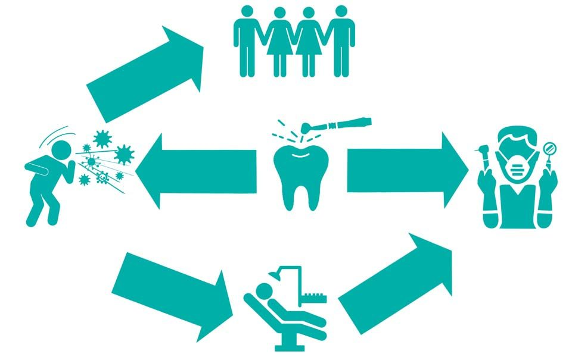
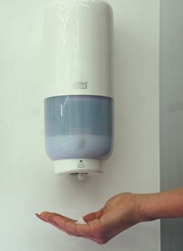
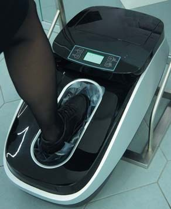
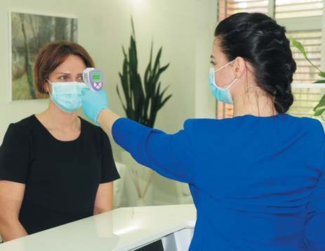
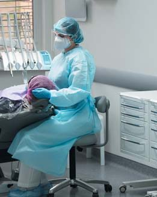
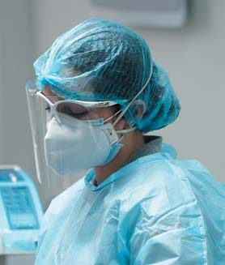
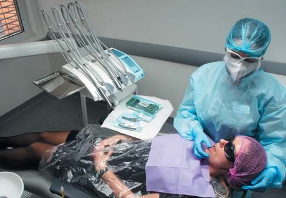
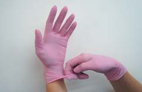
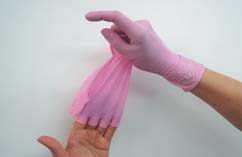
Захисні заходи стоматологів
11 травня 2020 року Міністерство охорони здоров'я України затвердило Тимчасові рекомендації про організацію протиепідемічних заходів при наданні стоматологічної допомоги на період карантину у зв'язку з поширенням коронавірусної інфекції (COVID-19). Виходячи з імовірності поширення інфекції для певних ситуацій, рекомендуються трирівневі захисні заходи для стоматологів:
- Первинний захист (стандартний захист персоналу в клінічних умовах): одноразова робоча шапочка, одноразова хірургічна маска та одноразовий халат, захисні окуляри або захисна маска, а також одноразові латексні чи нітрилові рукавички за необхідності.
- Вторинний захист (розширений захист для стоматологів): одноразова робоча шапочка, одноразова хірургічна маска, захисні окуляри, захисна маска та одноразовий ізоляційний комбінезон або хірургічний одяг зовні, одноразові латексні рукавички, бахили.
- Третинний захист (посилений захист при контакті з пацієнтом із підозрою або підтвердженням інфекції COVID-19). Хоча пацієнта з підтвердженою інфекцією COVID-19 не очікують для лікування в стоматологічній клініці, у малоймовірному випадку, якщо в цьому буде гостра потреба і стоматолог не зможе уникнути тісного контакту, слід використовувати спеціальний водонепроникний захисний комбінезон, респіратор (N95, EU FFP2 або вищого класу захисту), хірургічну маску, захисні окуляри з ізоляційною прокладкою, які щільно прилягають до обличчя, одноразові латексні рукавички і непроникні бахили для взуття.
Таким чином, при звичайному прийомі персонал клінічної зали (лікар, асистент) має використовувати: одноразовий халат/комбінезон (повинен змінюватися кожного прийому), одноразову робочу шапочку, захисні окуляри/щиток, маску, рукавички, бахили. Слід дотримуватися рекомендацій використання маски FFP2 (або FFP3) для процедур, що викликають утворення аерозолю, яку можна носити навіть при 4-х послідовних годинах роботи, з надягненою поверх неї хірургічною маскою, яку використовують одноразово. Носити маску FFP2 чоловікам слід без бороди, щоб забезпечити максимальне прилягання до шкіри обличчя. Якщо огляд або лікування не спричинять утворення аерозолів, придатні хірургічні маски (фото 4 а, б, в).
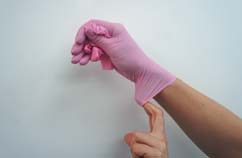
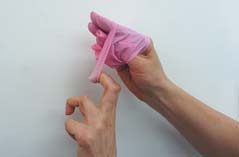
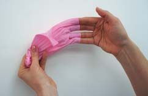
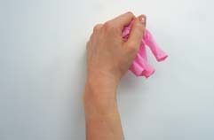
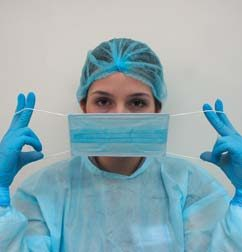
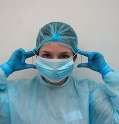
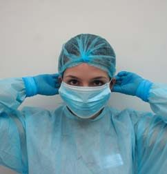
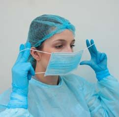
Клінічний прийом пацієнтів за високого рівня епідеміологічної загрози
При наданні стоматологічної допомоги слід надавати перевагу протоколам лікування, які мінімізують кількість відвідувань.
Вважається, що передопераційне протимікробне полоскання для рота зменшує кількість мікробів у ротовій порожнині. Однак, як зазначено в Інструкції з діагностики та лікування нової коронавірусної пневмонії Національної комісії охорони здоров'я КНР, хлоргексидин, що зазвичай використовується для полоскання рота у стоматологічній практиці, може бути неефективним. Перед прийомом пацієнта рекомендується такий протокол ополіскування: 1% р-ном перекису водню і 0,2% р-ном повідону 15 с обполіскувати горло, після чого 30 с обполіскувати ротову порожнину і не обполіскувати після цього водою.
Використання рабердаму може значно мінімізувати утворення біоаерозолю і бризок, особливо у випадках, коли використовуються високошвидкісні наконечники і стоматологічні ультразвукові пристрої. Відомо, що використання рабердаму зменшує кількість частинок у повітрі в радіусі близько 1 м операційного поля на 70%. При використанні рабердаму під час процедур слід застосовувати слиновідсмоктувач і пилосос з високим ступенем всмоктування. Також потрібне виконання маніпуляцій у чотири руки.
На полицях кабінету не повинно бути нічого зайвого, жодних матеріалів багаторазового використання, тільки запаковані інструменти, потрібні для запланованого втручання (те, що необхідне для невідкладних станів, ендодонтії чи видалення), інструменти закриті до моменту, доки вони не знадобляться. Бажано працювати в невеликому кабінеті, де легше робити дезінфекцію. Усі ручки і поверхні рекомендується захистити за допомогою обмотування одноразовою плівкою.
Людські коронавіруси, як SARS-CoV, коронавірус респіраторного синдрому на Близькому Сході (MERS-CoV) чи ендемічні коронавіруси людини (HCoV), можуть зберігатися на таких поверхнях, як метал, скло чи пластик, до 72 годин, тому забруднені поверхні в медичних установах є потенційним джерелом передачі коронавірусу. Однак вони легко можуть бути інактивовані під час дезінфекції поверхонь 62-71% р-ном етанолу, 0,5% р-ном перекису водню або 0,1% р-ном гіпохлориту натрію протягом не менше 1 хвилини. Краплі аерозолю осідають униз протягом 10-30 хвилин після їх утворення на висоті голови пацієнта (близько метра від підлоги). Крім застосування дезінфектантів на основі спирту, рекомендується очищати поверхні одноразовою дезінфекційною серветкою, щоб усунути великі забруднення. Під час усіх процедур прибирання та дезінфекції персонал повинен бути одягнений в індивідуальні засоби захисту. Зняття слід завершити тільки після прибирання кабінету. Також слід обробити всі поверхні по шляху пацієнта (протерти всі ручки дверей, підлокітники і т. д.).
Вважається цілком можливим те, що медичні відходи (включаючи одноразові засоби захисту) мають тимчасово зберігатися в загальних контейнерах, наявних у кабінеті, і згодом утилізуватися звичайним шляхом; таким же чином інструменти і матеріали багаторазового використання повинні бути попередньо оброблені, очищені, стерилізовані і належним чином зберігатися у відповідності з рекомендаціями, які ми розглянемо нижче. Також після завершення прийому слід зробити кварцювання протягом 30-40 хв з подальшим примусовим провітрюванням кабінету протягом 5-7 хв.
Відомо, що основними можливими джерелами передачі інфекцій є інструменти лікаря-стоматолога. Лише правильна і якнайповніша система їх обробки може гарантувати безпеку проведення стоматологічних маніпуляцій за нинішньої епідеміологічної ситуації. Один із сучасних методів обробки інструментарію — повністю автоматизований замкнутий цикл дезінфекції і стерилізації інструментів з використанням обладнання Melag, який застосовується на базі кафедри післядипломної підготовки лікарів-стоматологів УМСА у клініці «Професорська стоматологія».
Після завершення прийому асистент кладе всі використані інструменти у спеціальні контейнери і відправляє до місця обробки в «брудну» зону стерилізаційної. Далі інструменти поміщають у мийно-дезінфекційну машину MELAtherm 10 для їх знезараження або дезінфекції при температурі 95° С. Використання мийно-дезінфекційної машини забезпечує істотну економію коштів і часу в порівнянні з ручним очищенням, а також вищу ефективність обробки.
Інструменти упаковуються в стерилізаційні пакети і запечатуються за допомогою роторної пакувальної машини MELAseal Pro. Стерилізація інструментів у сучасних стоматологічних клініках відбувається в парових стерилізаторах. У відповідності з міжнародним стандартом DIN EN ISO 13060, розрізняють три класи стерилізаторів: B, S і N. Найкращим з них вважається стерилізатор класу В, бо у нього є можливість обробки інструментів незалежно від типу упаковки і наявності порожнин.
Vacuckav 44 B+ Evolution (Melag) — автоклав класу В, перевагою якого є максимально короткий цикл стерилізації при великому обсязі камери. Крім того, автоклав має сенсорний екран, що спрощує взаємодію оператора з ним. Також компанія Melag запропонувала швидкісний автоклав Melaquick 12, призначений для швидкої стерилізації, повний цикл якої триває лише 7 хв завдяки маленькому обсягу камери. Для завантаження інструментів і наконечників використовуються спеціальні кошики, що входять до комплекту.
Останнім етапом повного циклу обробки інструментарію є звітність. Після успішного завершення програми стерилізації з допомогою принтера MELAprint 60 роздруковуються наклейки з унікальними штрих-кодами для кожного інструмента. Це підтвердження стерильності і придатності обробленого інструмента для подальшого використання.
Усе обладнання Melag під'єднане до програмного забезпечення MELAtrace, що дозволяє повністю фіксувати кожен цикл обробки інструментів. При цьому враховуються всі деталі: дата, година, оператор, який провадив обробку, успішність кожного етапу стерилізації. А функція підготовки повноцінних звітів дозволяє зберігати інформацію про кожен цикл обробки і забезпечує надійну простежуваність медичних інструментів на всьому шляху до пацієнта. Після кожного прийому всі штрих-коди використаних інструментів фіксуються в електронній картці пацієнта. Відсканувавши штрих-код, можна отримати детальну інформацію про дезінфекцію і стерилізацію даного інструмента.
Слід зазначити, що використання єдиної системи забезпечує узгодженість усіх етапів знезараження інструментів і формування відпрацьованого алгоритму процесів. Під час обробки практично виключається людський фактор, оскільки весь цикл механізований. Це підвищує ефективність і безпеку робочого процесу. Цикли стерилізації можуть перетинатися. Як тільки мийно-дезінфекційну машину вивантажено й інструменти упаковують у стерилізаційні пакети, наступна партія інструментів може бути завантажена в машину і процес дезінфекції можна починати знову. Це суттєво економить час, дає можливість обробляти велику кількість інструментів. Повне електронне документування забезпечує зберігання інформації про всі цикли стерилізації і всі дії оператора. Роздруківка унікальних штрих-кодів дає можливість перевірити шлях інструмента від мийно-дезінфекційної машини до крісла пацієнта. На прохання пацієнта, відсканувавши штрих-коди використаних інструментів, можна надати доказ їх стерильності на момент роботи.
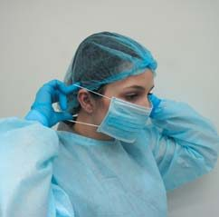
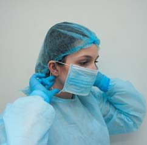
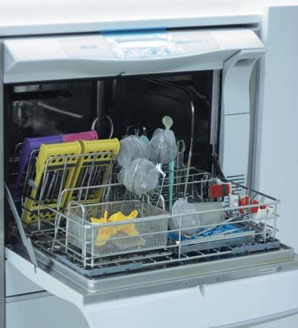
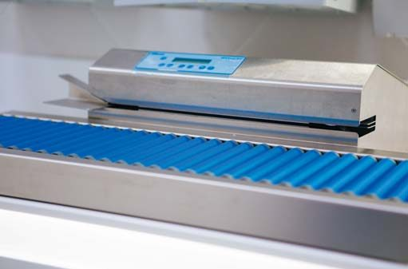
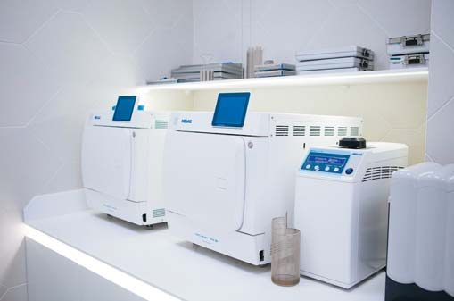
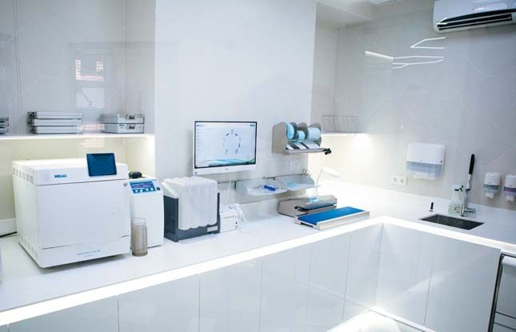
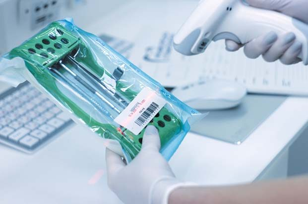
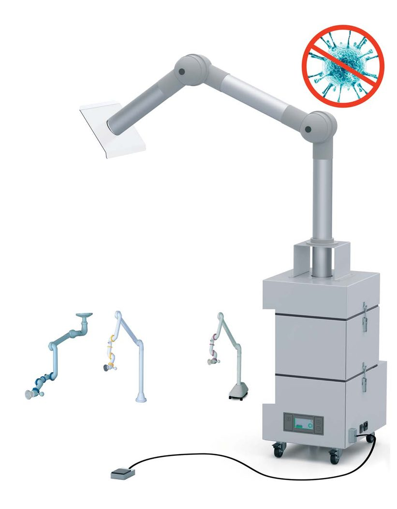
Висновки
Гігієна, безпека і сучасні методи обробки — найважливіші умови для роботи будь-якої стоматологічної клініки в будь-яких епідеміологічних умовах. І пацієнт, і лікар, незалежно від інфекційних обставин, мають бути впевнені в тому, що вони максимально захищені під час будь-якої стоматологічної процедури. В умовах виклику, який ми отримали у 2020 році, стало вкрай важливо мати у своєму розпорядженні надійне і якісне обладнання, що відповідає всім вимогам і забезпечує повне знищення будь-яких вірусних та інфекційних збудників. Це змушує промоніторити звичні і, здавалося, елементарні для нас етапи від дезінфекції до стерилізації.
Здоров'я людини — найвища цінність. Бережіть себе!
Фото зроблені на базі кафедри післядипломної підготовки лікарів-стоматологів УМСА у клініці «Професорська стоматологія» (м. Полтава).
Література
- Michele Perelli, Paolo Giacomo Arduino. Рекомендации менеджмента стоматологической практики в ургентном режиме // http://uaplatform-uaperio.org
- Sun P., Lu X., Xu C., Sun W., Pan B. Understanding of COVID-19 based on current evidence [published online ahead of print, 2020 Feb 25]. J Med Virol 2020; 10.1002/jmv.25722.
- Meng L., Hua F., Bian Z. Coronavirus Disease 2019 (COVID-19): Emerging and Future Challenges for Dental and Oral Medicine [published online ahead of print, 2020 Mar 12]. J Dent Res 2020; 22034520914246.
- Micik R. E., Miller R. L., Mazzarella M. A., Ryge G. Studies on dental aerobiology, I: bacterial aerosols generated during dental procedures. J Dent Res 1969;48:49-56.
- Harrel S. K., Molinari J. Aerosols and splatter in dentistry: a brief review of the literature and infection control implications. J Am Dent Assoc 2004;135:429-37.
- Демидов Ю. Организация отделения стерилизации инструментов в стоматологической клинике // ДентАрт. — №3. — 2019. — C. 61-63.